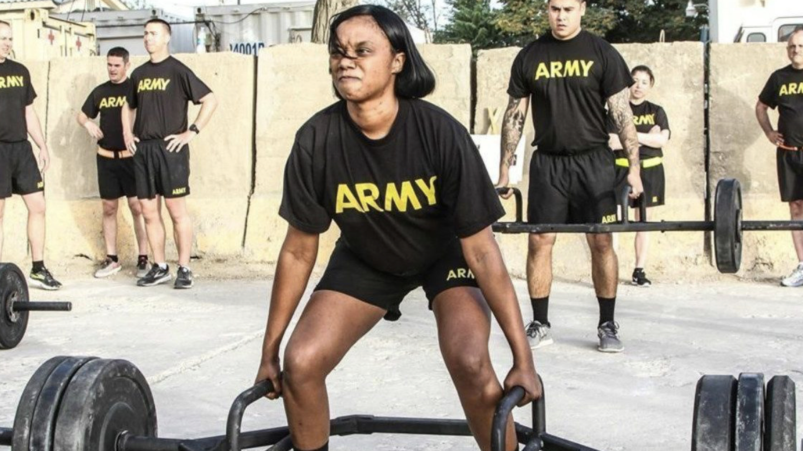
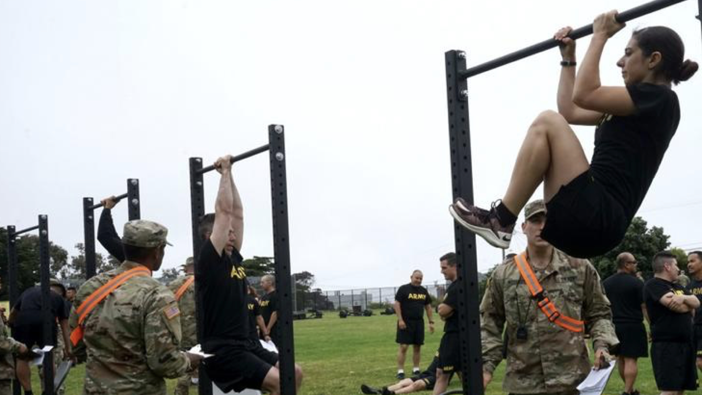

Maryland's ROTC Cadets React:
Are high female fail rates on Army's new fitness test
due to sexism, biology or poor training?

Students often question the test when most of the class fails.
But when military.com reported most female soldiers failed the Army’s new combat fitness test in September, University of Maryland ROTC cadets weren’t sure what to think or how to question sexism in the service.
“It’s not like they’re trying to target females,” said Army Cadet Amy Petrocelli, a junior Communications major and assistant public affairs officer. “But that males have a natural biological advantage [in certain events]."
This is one conclusion reached by cadets to explain the reported 84% failure rate by female troops during the initial roll out of the new test.
But is there another?

The Army Physical Fitness Test, first introduced in 1980, was designed to test muscular strength, endurance and cardiovascular respiratory fitness, according to military.com.
“If you look at what the Army does, a lot of it is physical,” said Cadet Jake Sneiderman, Command Sergeant Major of the Terrapin Battalion and Criminal Justice senior. “And every soldier, from the very lowest level to the very highest level, has to be proficient in physical endurance.”
Field Manual 7-22: Army Physical Readiness Training governs the administration of the current test and includes instructions for conducting training sessions.
“The standards for the current test are different for men and women,” Lt. Col. Marisa Pace, Army ROTC program administrator and military science professor, said. “The minimum is 60 points in each event in order to pass and be considered a go and remain in the Army.”
FM 7-22 provides information on how to convert a soldier’s performance into points, a maximum of 100 in each event for a total of 300, which can then be used as a competitive performance measure for promotion and other opportunities.
The Air Force Fitness Assessment is very similar to the Army's current APFT.
While the Army test involves two minutes of push ups, two minutes of sit ups and a 2-mile run; the Air Force test consists of one minute of push ups, one minute of sit ups and a 1.5-mile run.
So currently, physical training is very similar for Army and Air Force cadets, and females and males have performed equally on both tests which have gendered standards.
“I failed my first [performance fitness assessment],” said Air Force Cadet Captain Bridgidanna Crews, an Information Science junior who passed after a retake.
“Depending on how much you fail by, you can take it again the next week, like if you weren’t feeling well that day. But if you missed by a lot, you retake it the next semester.”
Cadets have three opportunities to pass the test before they are separated from the program, 1st Lt. Joshua Rager, an assistant professor of Aerospace Studies, explained.
“Fitness in general is tied to military tradition,” Rager said. “And we have to be ready for those combat situations.”
“I actually like the PFA as it is,” Crews said upon learning of the Army’s move to a new physical test with a gender-neutral standard. “I know that girls and guys like different standards because we’re built differently.”
According to Army.mil, the Army Combat Fitness Test is designed to be "gender-neutral" with a single upper (maximum) target for each of the six events.
The six events include deadlift, standing power throw, hand-release push ups, sprint-drag-carry, leg tuck and a two-mile run.
No longer will there be variations by gender or age group for soldiers to earn 100 points in each event.
The minimum standards vary according to if the soldier is in a combat arms or combat support military occupational specialty.
Those with "desk jobs" will have a lower minimum passing standard than those with infantry or other combat arms specialties (140 pounds deadlifted for three repetitions compared to 260, for example).
However, both will have to hit the same maximum target in order to earn the full 100 points (340 pounds deadlifted per repetition), regardless of age or gender.
“As a female, I am much more worried about the leg tuck and the deadlift,” Petrocelli said, who took the new test while attending airborne training over the summer.
Though Petrocelli passed her ACFT, her scores were far lower than her usual 290 total, and she had to work out constantly just to meet the minimum standard, something she said she could not do with classes in session.
Similarly, most females who failed the initial round of testing in September had trouble with the leg tuck event, which requires training specifically for upper body strength.
A majority of the failures, for both males and females, were in the leg tuck event.
Army-Fitness.com reports this event requires double the amount of force uesd in a traditional sit-up as soldiers must touch their knees or thighs to their elbows while remaining suspended from a pull-up bar.
Maj. Gen. Lonnie Hibbard, commander of the Center for Initial Military Training which leads the Army’s implementation of the new test, told military.com there remains “about a 100 to a 110-point difference between men and women on average.”
Both sets of scores are passing, but the difference between them impacts promotions and advancement opportunities.
Petrocelli fears the long-term consequences of females either failing or barely passing the Army’s new fitness standard.
On the other hand, she views the gender-neutral standard as a way to avoid males' criticism of the current lower “female standard.”
The Marine Corps Times reported in 2017 an internal push to make both their Combat Fitness and Physical Fitness tests gender neutral in order for females “to meet the more rigorous requirements set for men.”
Lt. Col. Misty Posey, a former planner with the Marine Corps Force Innovation Office from 2014-2016, told the Marine Corps Times she supported gender neutral tests to “ease the sexism prevalent in the service and help female service members be seen as equal by their male peers.”
The Air Force is also “testing buy-in” for gender-neutral testing, according to military.com.
“I sort of hope [the new Army test] can mitigate some of those sexist comments if we are on the same scale and are just able to perform better,” Petrocelli said. “That’s my goal.”
The Army Combat Fitness Test becomes the standard October 1, 2020.